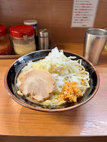

Kaze no Jin - Iekei-style Ramen

- Price: ¥1000
- Rating: 7.5/10
- Last date I had it : 2024-12-24
- Review: supposedly popular w/ some students who attend tokyo uni (japans #1 uni) and i can see the appeal - cheap and volumey. nothing particular stands out though, the toppings are the iekei style ones (bean sprouts cabbage onions which are great) and chashu (which was mediocre at best). For a broke college student who also needs the time for studying/part-time job, a quick and filling bowl for ¥1000 here is probably the best one can get.